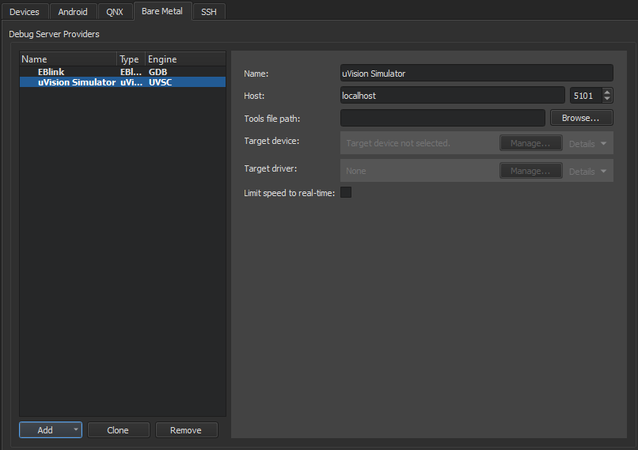
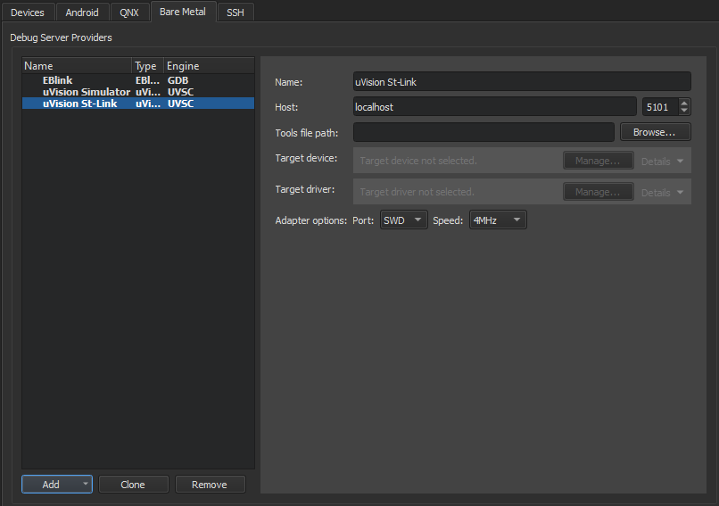

Set up the uVision IDE
uVision is an IDE for developing applications for embedded devices. To debug applications, use uVision Simulator, or debug directly on hardware by using St-Link and J-Link.
The Peripheral Registers view in Debug mode shows the current state of peripheral registers. The view is hidden by default.
uVision Simulator

}
To set preferences for uVision Simulator:
- Go to Preferences > Devices > Bare Metal.
- Select Add.
- Select uVision Simulator.
- In Name, enter a name for the connection.
- In Host, select the host name and port number to connect to the debug server provider.
- In Tools file path, enter the path to the Keil toolset configuration file.
- In Target device, select the device to debug.
- In Target driver, select the driver for connecting to the target device.
- Select Limit speed to real-time to limit the connection speed.
- Select Apply to add the debug server provider.
uVision St-Link or JLink Debugger

To set preferences for uVision St-Link or JLink Debugger:
- Go to Preferences > Devices > Bare Metal.
- Select Add.
- Select uVision St-Link or uVision JLink.
- In Name, enter a name for the connection.
- In Host, select the host name and port number to connect to the debug server provider.
- In Tools file path, enter the path to the Keil toolset configuration file.
- In Target device, select the device to debug.
- In Target driver, select the driver for connecting to the target device.
- In Adapter options specify the adapter interface type and speed in MHz.
- Select Apply to add the debug server provider.
See also How To: Develop for Bare Metal and Developing for Bare Metal Devices.